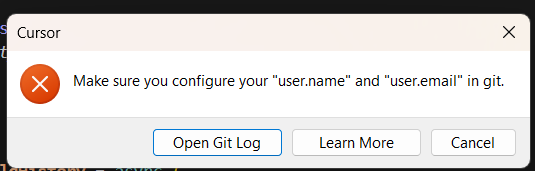

Kurulum ve Gereksinimler
Bilgisayarı hazırlama · GitHub'dan alma · Canlıya gönderme
Büyük resim (4 adım)
Ne kurulmalı?
| Program | Gerekli mi? | Ne için? |
|---|---|---|
| Cursor | Evet | Mockup üretimi, düzeltme, task metinleri; HBC'den kopyalanan metinleri buraya yapıştırırsınız |
| Git | Evet | Projeyi GitHub'dan indirmek ve yaptığınız değişiklikleri geri göndermek (kod yazmanız gerekmez) |
| Python 3 | Evet | Mockup script'leri (Excel vb.). Cursor ile kontrol + kurulum prompt'u yeter |
| Chrome | Evet | HBC'yi açmak, mockup gezmek, Sunum modu, Jira Tümünü kopyala |
Aşağıda yeşil kutu = Cursor ile (önerilen). Turuncu kutu = Manuel (Cursor yetmezse veya tercih ederseniz).
1. Cursor kurulumu
- cursor.com adresinden Cursor'ı indirip kurun.
- Açılışta e-posta ile oturum açın (ekip hesabınız varsa onu kullanın).
2. Git kurulumu (bir kez)
Git, dosyaları GitHub ile eşitleyen küçük bir programdır. Komut ezberlemeniz gerekmez. Cursor önce kurulu mu diye bakar; yoksa kurulumda yardımcı olur.
Önerilen. Sohbete yapıştırın:
- git-scm.com/download/win adresinden Git for Windows indirin.
- Kurulumda varsayılanları kabul edin (Next / Next / Finish).
- İsterseniz Cursor'ı bir kez kapatıp açın.
3. Python kurulumu (bir kez)
Mockup script'leri (Excel vb.) için Python gerekir. Cursor önce kurulu mu diye bakar; yoksa kurulumda yardımcı olur. Bu adımı proje indirmeden önce tamamlayın.
Önerilen. Sohbete yapıştırın:
- python.org/downloads → Windows installer.
- Kurulumda Add python.exe to PATH kutusunu işaretleyin.
- Install Now. Bitince Cursor'ı yeniden açın.
4. Projeyi GitHub'dan alma ve Cursor'da açma (bir kez)
Bu adım bir kez yapılır. Klon = projenin kopyasını bilgisayarınıza indirmek.
Sonraki günlerde tekrar klonlamazsınız; workspace'ten açıp (adım 5) güncelleme alırsınız (adım 6).
Önce çalışma klasörünüzü seçin (ör. D:\worx), sonra aşağıdaki yollardan birini kullanın.
https://github.com/hakanerdal/hbcCanlı site:
https://hakanerdal.github.io/hbc/
Önerilen. Sohbete yapıştırın (klasör yolunu gerekirse değiştirin):
Başarılıysa sol panelde calismalarim listelenir.

Sol taraftaki prompt işe yaramadıysa veya klasör açılmadıysa:
- Klon olduysa: File › Open Folder… (veya Add Folder to Workspace…) → doğrudan
hbcklasörünü seçin. - Klon da olmadıysa ekibe bildirin veya Cursor'a «klon neden başarısız?» diye sorun.

Windows klasöründe de kontrol: hbc içinde index.html ve calismalarim olmalı.

- Eski klasörün adını
eski_hbcyapın (sağ tık → Yeniden adlandır). - Yukarıdaki yeşil prompt ile yeni
hbcklonunu alın ve Cursor'da açın. - Cursor sohbetine şunu yapıştırın (yolları kendinize göre düzeltin):
eski_hbc klasöründeki kendi çalışmalarımı yeni hbc'ye aktar. calismalarim altındaki çalışma klasörlerini kopyala; js/calismalar-meta.js listesine eksik girişleri ekle. Çakışan dosyada bana sor. Bitince ne kopyalandığını kısa özetle. Sonra değişiklikleri commit edip GitHub'a push etmeye hazır olduğumu söyle (ben onaylayınca push ederiz).
- Canlı sitede ve Cursor'da çalışmalarınızı görünce
eski_hbc'yi silebilirsiniz (veya bir süre yedek tutun).
5. Workspace kaydetme (sonraki açılışlar için)
Her seferinde klasör aramayın. Bir kez workspace kaydedin; sonraki sefer kısayoldan açın.
-
hbcCursor'da açıkken: File › Save Workspace As… (Türkçe arayüzde «Çalışma Alanını Farklı Kaydet» benzeri). -
Dosya adı örn.
hbc.code-workspace— kolay bulacağınız bir yere kaydedin (masaüstü veyaD:\worx). -
Sonraki sefer:
- File › Open Recent listesinden
hbc (Workspace)seçin, veya - Kaydettiğiniz
hbc.code-workspacedosyasına çift tıklayın — Cursor doğrudan HBC ile açılır.
- File › Open Recent listesinden
-
Yerelde mockup gezmek için: Dosya gezgininde
hbc→index.htmlçift tıklayın (Chrome). Cursor'dan değil, Windows klasöründen açın.
index.html— dosya gezgininden çift tıklayın. - Günlük akış: Başlangıç rehberi — metni kopyala → Cursor sohbetine yapıştır.
6. Her çalışmada: önce pull, bitince push
Ekip aynı projeyi paylaşıyor. Bu iki adımı atlamayın — aksi halde başkasının işini ezer veya sizin işiniz canlıya / arkadaşlara gitmez.
Cursor'ı açtıktan sonra, mockup veya düzeltmeye başlamadan sohbete yapıştırın:
Böylece bilgisayarınızda en güncel dosyalar olur.
İşi bitirince (veya günün sonunda) mutlaka gönderin:
Push olmadan canlı site ve ekip sizin değişikliklerinizi görmez.
Kısa kural — her oturumda bu sıra
İlk kez gönderiyorsanız ad / e-posta için 7a'ya bakın. Ayrıntılı push / pull: 7. ve 8. adımlar.
Çakışmayı azaltmak için: işe başlamadan pull, aynı çalışma klasörüne aynı anda iki kişi girmeyin, bitince push.
7. Değişiklikleri GitHub'a gönderme (ayrıntı)
Cursor'da mockup ürettiniz veya düzelttiniz. Bunlar şimdilik sadece sizin bilgisayarınızda. Arkadaşların ve canlı sitenin görmesi için GitHub'a göndermeniz gerekir.
7a. İlk gönderimden önce — adınızı bir kez kaydedin
Git, «bu işi kim yaptı?» bilgisini ister. Bunu bir kez yaparsınız; sonraki gönderimlerde tekrar gerekmez. Ad ve e-postayı kendi bilgilerinizle yazın — e-posta olarak GitHub üyelik e-postanızı kullanın.
Önerilen. Sohbete yapıştırın:
Gerekmez — yeşil kutuyu kullanın. Teknik komut bilmeniz şart değil.

7b. Gönderin (push)
Önerilen. Sohbete yapıştırın:
1–3 dk sonra canlı site güncellenir. Eski görünüyorsa Ctrl+F5.
Sol kenar Source Control (dal ikonu) → mesaj yazın → Commit → Sync / Push.
8. Başkasının güncellemesini almak (pull — ayrıntı)
Günlük kullanım için adım 6 yeter. Burada aynı işlemin Cursor / manuel yolları var.
Source Control'de … menü → Pull (veya Sync).
9. Canlı siteyi açma
- Tarayıcıda canlı siteyi açın:
https://hakanerdal.github.io/hbc/ - Ana sayfada Çalışmalarım kartlarını görürsünüz; karttan mockup'a girersiniz.
- Jira'ya veya mail'e paylaşırken bu canlı linki kullanın (bilgisayarınızdaki
file://yolu değil).
index.html çift tık): Siz tasarlarken hızlı bakış.· Canlı (github.io): Müşteri / ekip / Jira paylaşımı; push sonrası güncel sürüm.
+ Yeni çalışma
Ana sayfadaki + Yeni çalışma butonu formu doldurduktan sonra Cursor'a yapıştırılacak metni panoya kopyalar. Metni Cursor sohbetine yapıştırın; klasör oluşur. Bitince mutlaka push edin (adım 6 / 7b).
İlk kontrol listesi
| Kontrol | Beklenen |
|---|---|
| Git kurulu | Bölüm 2 yeşil prompt → «kurulu» + sürüm |
| Python 3 kurulu | Bölüm 3 yeşil prompt → sürüm görünür |
hbc klasörü | İçinde index.html ve calismalarim var |
Cursor'da calismalarim | Sol ağaçta görünür (bölüm 4 yeşil prompt veya turuncu Open Folder) |
| Workspace kaydı | hbc.code-workspace kaydedildi; Open Recent'te çıkar |
Lokal index.html | Çalışmalarım kartları açılır |
| Canlı site | https://hakanerdal.github.io/hbc/ açılır |
| Push denemesi | Küçük bir değişiklik → commit+push → canlıda görünür |
| Günlük alışkanlık | Başlamadan pull · bitince push (adım 6) |
Sorun giderme
| Belirti | Ne yapın? |
|---|---|
| Klon oldu, sol ağaç boş / yanlış klasör | Bölüm 4 turuncu kutu — hbc için Open Folder |
| «conflict» / çakışma / push rejected | Adım 6'daki yeşil çakışma prompt'unu Cursor'a yapıştırın |
| «configure your user.name and user.email» | Bölüm 7a yeşil prompt (ad + e-posta); Cancel → yapıştır → sonra 7b |
| «git is not recognized» / Git yok | Bölüm 2 yeşil kurulum prompt'u; olmazsa turuncu manuel indirme. Cursor'ı yeniden açın |
| Klon / push oturum istiyor | Tarayıcıda GitHub'a giriş yapın; ekip sizi repo'ya eklemiş olmalı |
| Push ettim, canlı eski | 1–3 dk bekleyin; Ctrl+F5. Hâlâ eskiyse Cursor'a «push başarılı oldu mu?» diye sorun |
| HBC sayfası düz metin / stiller yok | Tek dosyayı değil, tüm hbc klasörünü koruyarak açın |
| + Yeni çalışma sonrası klasör yok | Panodaki metni Cursor sohbetine yapıştırdınız mı kontrol edin |
| Cursor «script» / Python hatası | Bölüm 3 yeşil kontrol + kurulum prompt'unu gönderin |
| Mockup bozuk görünüyor | Sayfayı yenileyin; düzelmezse mockup'ta Düzenle → Cursor'a neyin bozuk olduğunu yazın |
İlgili sayfalar
- Başlangıç rehberi — 4 adımlı akış, ekran sihirbazı
- Jira İş Açma — Text / Visual, Tümünü kopyala
- Çalışmalarım